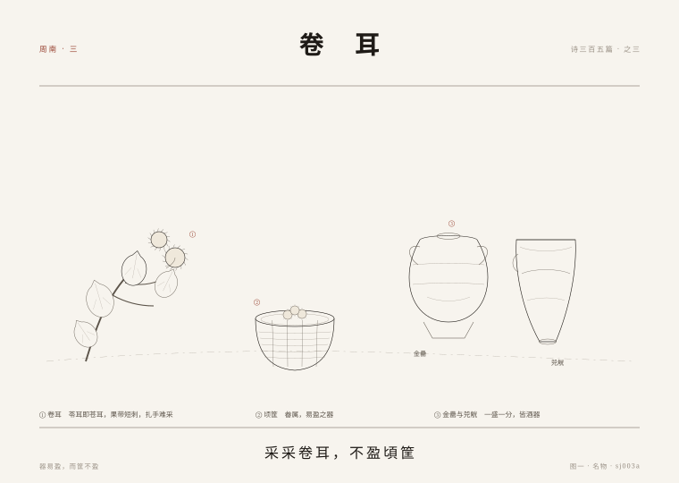
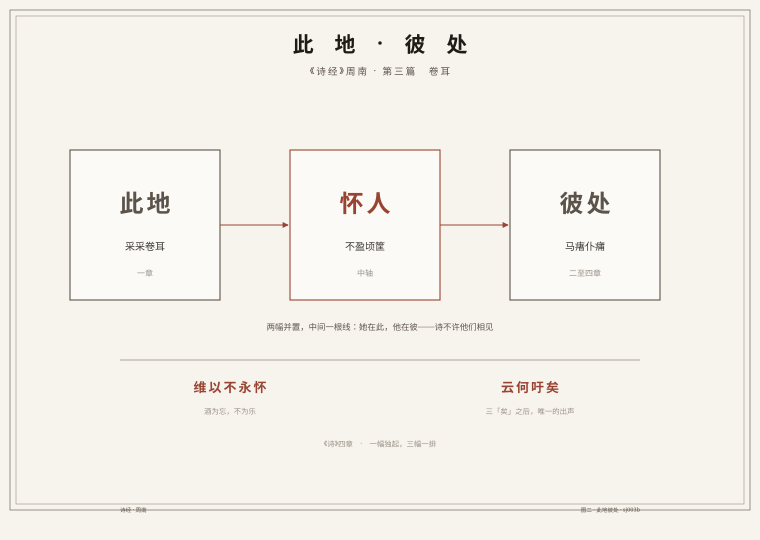

第三篇 卷耳
周南 · 之三 SJ003
朗读 · 普通话
依经文正文朗读，句读从文；不配乐、不改速、不加拖腔。全库同一音色（豆包 TTS），非播音员录制。
一 解题
诗三判：
- 谁在说：一位采卷耳的女子。第一章是她，毫无疑问——手在采，心不在，一筐采不满。二至四章陡转：升崔嵬、马虺隤、酌金罍、登高冈、马玄黄、酌兕觥、上砠、马瘏、仆痡、终以「云何吁矣」。
- 说什么事：两幅画面并置。此地：一个采不满筐的人。彼处：一个登山、马病、仆病、只能以酒自解的人。中间一根线，是「怀人」二字。
- 为何编在此：前两篇写「成夫妇」，此篇写「夫妇既成而相离」。周南十一篇的次序是先立其常，再写其变：关雎立始，葛覃述常，卷耳述离。离而不怨，是这一卷的底色。
《毛序》：「《卷耳》，后妃之志也，又当辅佐君子求贤审官，知臣下之勤劳，内有进贤之志，而无险诐私谒之心，朝夕思念，至于忧勤也。」——把「怀人」读成「后妃念文王求贤」，把登山之苦读成「知臣下之勤劳」。
朱子《诗集传》：以此诗为后妃自作，见其贞静专一之至。不取「求贤审官」一节，只取「思念之切」。
本库持一更简的看法：诗只给两幅并置的画面，不给解释。它不说「她在想他」，它把「她在这里」和「他在那里」摆在一起，让读者自己去连。谁在说二至四章——是她设想他，还是他自述，诗没有交代。这不是诗的缺陷，是它的手法。
二 经文
第一章
采采卷耳，不盈頃筐。嗟我懷人，寘彼周行。
第二章
陟彼崔嵬，我馬虺隤。我姑酌彼金罍，維以不永懷。
第三章
陟彼高岡，我馬玄黃。我姑酌彼兕觥，維以不永傷。
第四章
陟彼砠矣，我馬瘏矣，我僕痡矣，云何吁矣。
分章：毛传、朱子皆四章。一章独为一幅，二三四为一组：三章同一句式「陟彼……我马……」，是排比推进；到第四章三句连「矣」，气尽而声促，收得最重。
三 韵读
| 一 |
筐、行 |
陽部 |
| 二 |
嵬、隤、罍、懷 |
微部 |
| 三 |
岡、黃、觥、傷 |
陽部 |
| 四 |
砠、瘏、痡、吁 |
魚部 |
一章与三章同押陽部，二章押微部。陽部开阔，微部细密：一章是「采而不满」的空落，三章是「登而更高」的开阔；二章夹在中间，音转细，正是「马病了、人乏了」的那口气。四章四字全押魚部，且句尾全用「矣」，是叹息的连缀——韵在此不是伴奏，是喘气。
四 字义与名物
字义：
- 采采：毛传「事采之也」；朱子「非一采也」。谓采了又采。
- 卷耳：毛传「苓耳也」，即苍耳。
- 頃筐：毛传「畚属，易盈之器也」。浅而宽的筐，容易装满——正因易盈，才显出「不盈」的不寻常。
- 盈：满。
- 嗟：叹词。
- 懷人：所思念的人。
- 寘：置、弃置。
- 周行：两训并存。毛传以「行」为「列」，谓「周之列位」，即朝廷位次；朱子以「周行」为「大道」。前者通「求贤」说，后者通「思妇」说。一字之训，两首诗。
- 陟：升、登。
- 崔嵬：毛传「土山之戴石者」。高而不平。
- 虺隤（huī tuí）：毛传「病也」。
- 姑：毛传「且也」。姑且、勉强。
- 金罍：毛传「酒器也」。青铜盛酒器，有盖、双耳、圈足。
- 兕觥：毛传「角爵也」。犀角制的饮酒器，形如角。
- 玄黃：毛传「病也」。谓马病而毛色变。
- 瘏（tú）、痡（pū）：皆训「病」。马病曰瘏，仆病曰痡。
- 吁：毛传「忧也」。「云何吁矣」谓「还能怎么办呢，只有长叹」。
名物：
- 卷耳（苍耳）：菊科一年生，叶三角而粗，果实为带刺的球，善附着衣物。古人采其嫩苗可食，亦入药用。此物最不宜「采满筐」——刺球扎手，采之费工，正合「不盈」。
- 頃筐：竹编浅筐，口大底小，容量小，故曰「易盈」。
- 金罍：商周青铜酒器之大者，容酒多，用于盛而分酌；《诗》中凡言「罍」，多与燕享、军旅相关。
- 兕觥：以犀角为形，容量大而罚饮。《诗·豳风·七月》「称彼兕觥，万寿无疆」可参。此处以兕觥自酌，是「以大器自解」，不是细酌浅饮。
五 今译
一章 采了又采那卷耳，一浅筐还装不满。唉，我心里想的那个人——把筐搁在大路上。
二章 登上那高而不平的山，我的马病了。我且斟满那金罍，只为不要老是想着。
三章 登上那高高的山脊，我的马病了，毛色都变了。我且举起那兕觥，只为不要老是伤怀。
四章 登上那石山了，我的马病了，我的仆人也病了。还能怎么办呢？只有长叹。
六 章旨
一章 写「心不在」：器是易盈之器，事是日日之事，偏「不盈」。一个字不说想，全是想。末句「寘彼周行」，筐一放，人停了——这是全诗最静的镜头。
二章 转场：从平地到崔嵬。马病，是第一层；酌金罍，是第二层；「维以不永怀」，是第三层——酒不是为了乐，是为了「不再想」。
三章 再上一层：高冈、玄黄、兕觥、永伤。句式与二章几乎全同，只换字。重复即是疲惫：同样的动作做第二遍，说明第一遍没用。
四章 三「矣」连下，节奏断了：马病、仆病，人力尽。结以「云何吁矣」——不问天，不问人，只叹一口气。
总收：四章是两个空间的对切。一边是「不盈」，一边是「不尽」；一边停着，一边走着；一边把筐放下，一边把酒举起。诗不许他们相见，只让他们并排。
七 诗教
- 兴：首章以采卷耳起。采而不盈，是「手在此、心在彼」的起兴；卷耳带刺难采，是「事难而心更烦」的旁证。
- 观：可观三事——役之苦（马病、仆病、山高），思之切（易盈之器而不盈），解之穷（酒两酌而伤不减）。
- 群：可与共读者，是「两地一人」这四个字。凡有远行者、有留守者，读此篇不必注释。它的力量来自结构，不来自词句。
- 怨：此篇有怨而无咎。怨在「云何吁矣」四字，怨而不指人——不怨君，不怨役，只叹。这正是《周南》的分寸：苦到极处，仍不出一句恶声。
八 分寸与边界
- 不可把「周行」只作「大道」，或只作「列位」。毛、朱两训并存，各成一说：作「列位」则全诗通「求贤」，作「大道」则全诗通「思妇」。本库取「大道」为译文，而存毛训于字义，不裁。
- 不可把二至四章读成女子亲身登山。她若在山上，一章的「采采卷耳」与「寘彼周行」便无处安放。两幅并置，是此诗唯一的读法；一旦合为一幅，诗就散了。
- 不可把「金罍」「兕觥」读成享乐。两处皆冠一「姑」字——「姑且」，是无奈之辞；「维以不永怀」明说是为了止思，不是为了尽兴。读成豪饮，就把「解之穷」读成了「得之乐」。
- 不可把《毛序》「求贤审官」当作定论强加，也不可全然抹去。它是汉代的一种读法，能自圆其说，只是把「两地」压成了「一意」。存为解释史可，作定论不可。
- 不可把「云何吁矣」译作「怎么办啊」的软弱。吁训忧，是长叹到无语；三「矣」之后接这一句，是全诗唯一的出声。
九 存疑
- 二至四章谁在说：一说是女子设想其夫在外之状，一说是行者自述，一说是诗人两幅并置、不主一人。本库取第三说，前两说并存。
- 「周行」之训：毛传「列位」，朱子「大道」。见分寸第一条。
- 本事：《毛序》以为后妃思文王、念求贤；朱子以为后妃自作，见其专一。诗中无证，本库不指实。
- 「卷耳」何物：毛传「苓耳」，即今苍耳；一说即「葹」、一说是另一种可食野菜。本库从苍耳，图取其刺球之形。
- 「金罍」「兕觥」之用：一说是军旅、燕享之器，行役者未必能备；一说是诗人借器写意，不必实有。本库并存，图只取其形。
- 章数：毛传四章，无异说；唯第四章是否独立成章，旧有合三章为一者，今不从。
十 跨典
- 《论语·里仁》：「父母在，不远游，游必有方。」——行役之不得已，正在「有方」而不能不游。此篇之「彼处」，即「游」的那一头。
- 《孟子·梁惠王下》：「内无怨女，外无旷夫。」——孟子以「无怨女、无旷夫」为治世之象，正可反照此篇：两地相思，是一个时代没做到的事。
- 《周南·汝坟》：「未见君子，惄如调饥。」——同卷之内，同为思妇之词。「调饥」与「不盈」是同一手法：以身体的空缺写心里的空缺。
- 《小雅·采薇》：「昔我往矣，杨柳依依；今我来思，雨雪霏霏。」——行役之苦的正写。卷耳是侧写：不写路上的雪，只写马病、仆病、酒不解。
- 《豳风·七月》：「称彼兕觥，万寿无疆。」——同用兕觥，一为祝寿之饮，一为自解之饮。同器两用，见《诗》之宽。
十一 双卡与图
双卡五对：
| 采采卷耳（此） |
陟彼崔嵬（彼） |
| 不盈頃筐（心不在） |
我馬虺隤（路难行） |
| 寘彼周行（停） |
云何吁矣（叹） |
| 金罍 |
兕觥 |
| 永懷 |
永傷 |

图一 · 卷耳与顷筐 名物图

图二 · 此地彼处 义理图
读图三处：
- 卷耳的刺球：叶三角而粗，果带短刺。此物扎手，采之费工，正解「易盈之器而不盈」——不是筐大，是手慢。
- 顷筐的浅：口大底小，一眼见底。筐越浅，「不盈」越刺眼。
- 罍与觥并置：一大一小，一盛一分。诗里两章各酌其一，图的并置就是提醒：第二遍换了大器，伤并未减。